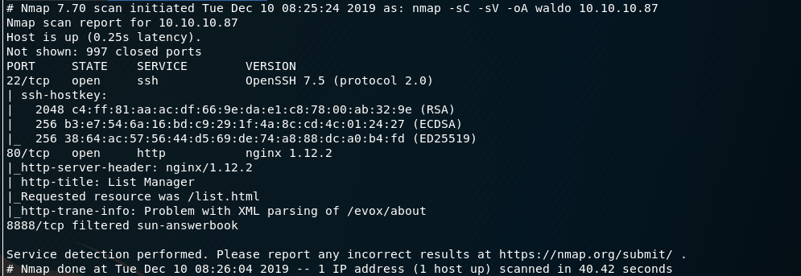

扫描端口信息：

访问80端口web页面如下：
利用burpsuite发现可利用其分别向dirRead.php和fileRead.php页面post数据：
由此猜测，可尝试LFI(local file inclusion)，且靶机可能对路径字符串进行了过滤处理
在dirRead.php和fileRead.php页面内找到如下处理方式：
即会去除../和.../"字符串，并会限制直接读取user.txt文件
简单尝试后，利用.../...//即可绕过上述约束，成功读取到/etc/passwd文件：

发现一nobody账户，在该账户目录下搜寻，位./.../...//.../...//.../...//home//nobody//.ssh//.monitor文件中发现一ssh私钥
利用该私钥，成功ssh登录到靶机nobody用户：
拿到user flag
进一步在靶机内搜集信息，发现authorized_keys文件：
似乎是提示可以ssh登录到monitor用户
而当前的Nobody ssh是被映射到了8888端口上：
此外，nobody ssh登录时提示为 Alpine Linux ，其为轻量级的linux发行版
进程资源所属的控制组信息如下：

由此可知，当前处于一个docker container内
既然暗示可ssh 登录 monitor用户，且rsa私钥的文件为.monitor
尝试以此登录monitor，成功：
但是拿到的是一个受限的rbash
利用ssh登录时执行bash命令绕过rbash限制，然后修改shell和path环境变量
下一步，寻找靶机中可利用的信息：
发现tac命令具备有一定权限：
利用该命令，成功读取root flag：